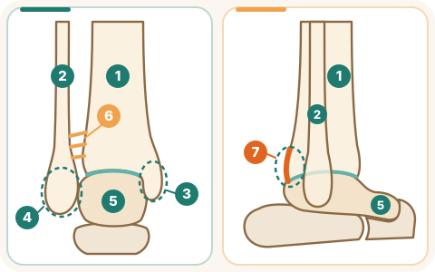

Видео в разработке — скоро появится здесь.
Что это за перелом
Голеностопный сустав образуют нижние концы большеберцовой и малоберцовой костей и таранная кость стопы. По бокам голеностопного сустава расположены две лодыжки: наружная — нижний конец малоберцовой кости, внутренняя — часть большеберцовой кости. Задней лодыжкой называют задний край большеберцовой кости (AAOS).

- Перелом одной наружной лодыжки часто стабилен.
- Двухлодыжечный перелом — сломаны наружная и внутренняя лодыжки; трёхлодыжечный — сломаны все три. Такие переломы часто нестабильны и нередко сочетаются с вывихом (AAOS).
- Иногда повреждаются связки, соединяющие большеберцовую и малоберцовую кости (синдесмоз).
- Признаки: сильная боль, отёк, синяк, невозможность наступить на ногу, иногда деформация.
Когда нужна операция
- Решает хирург по осмотру и снимкам. Операцию обычно предлагают, если отломки смещены или сустав нестабилен: часто при двух- и трёхлодыжечных переломах и при нестабильном повреждении синдесмоза (AAOS; BOAST).
- Стабильный перелом без смещения часто лечат без операции — гипсом или специальным ботинком (ортезом).
- Если в области перелома есть рана, даже небольшая, перелом может быть открытым. При этом кость не обязательно видна снаружи. Такой перелом требует немедленной медицинской помощи (NICE NG37; AAOS).
До операции
- Нога в шине или гипсе, лежит на возвышении выше уровня сердца: это уменьшает отёк (AAOS).
- При выраженном отёке окончательную операцию иногда откладывают, чтобы снизить риск осложнений со стороны кожи и послеоперационной раны. Однако при вывихе или значительной деформации сустава может потребоваться срочное вправление и временная фиксация, не дожидаясь уменьшения отёка. Срок окончательной операции определяет хирург (BOAST).
- Сообщите, если под шиной усилилась боль, появилось онемение, покалывание, стопа стала холодной или бледной.
- Курение, сахарный диабет и пожилой возраст повышают риск осложнений после операции (AAOS). Если вы курите — обсудите с командой, как отказаться хотя бы на время лечения.
Как проходит операция
- Хирург сопоставляет отломки и фиксирует их пластиной и винтами или только винтами; иногда используют стержень. Синдесмоз фиксируют винтом или специальной нитью с пуговицами (AAOS).
- После операции ногу обычно фиксируют шиной, гипсом или ортезом.
После операции в отделении
- Держите ногу на возвышении, двигайте пальцами стопы.
- Режим нагрузки зависит от типа перелома, надёжности фиксации и состояния мягких тканей. Некоторым пациентам разрешают раннюю нагрузку, другим временно запрещают наступать на ногу. Не увеличивайте нагрузку самостоятельно: соблюдайте письменные указания хирурга. Физиотерапевт научит безопасно ходить с костылями или ходунками (BOAST; WAX, The Lancet 2024).
- При переломе и ограничении подвижности медицинская команда оценивает риск образования тромбов и кровотечения. При необходимости врач назначает препарат для профилактики тромбоза. Выбор препарата и продолжительность лечения определяют индивидуально. Если препарат назначен, не прекращайте его приём самостоятельно (NICE NG89).
- Сразу сообщите персоналу: о боли, которая не проходит от обезболивающих; о новом онемении, покалывании, бледной или холодной стопе; о промокании повязки; о боли или отёке икры; о внезапной одышке или боли в груди.
Дома и восстановление
- Ранняя консолидация обычно занимает не меньше 6 недель, полное сращение — 10–12 недель; связкам и сухожилиям может понадобиться больше времени (AAOS).
- Контрольные рентгеновские снимки делают в сроки, которые назначит врач.
- Держите гипс и повязку сухими, если медицинская команда не дала других указаний. Не вставляйте предметы внутрь гипса и не пытайтесь самостоятельно его разрезать или снимать. Если гипс намок, сломался, сильно натирает или появился неприятный запах либо выделения из-под него, без промедления свяжитесь с отделением или обратитесь в приёмное отделение для осмотра (NHS).
- Отёк и скованность в голеностопе могут сохраняться несколько месяцев (AAOS).
- К обычной активности большинство возвращается через 3–4 месяца после травмы; полное восстановление после некоторых переломов может занять до 2 лет (AAOS).
- Возвращаться к вождению можно после согласования с врачом, когда вы способны безопасно управлять автомобилем и выполнить экстренное торможение без боли и ограничений. Нельзя водить, если фиксация правой ноги или лекарства, вызывающие сонливость, мешают безопасному управлению. При переломе правой лодыжки AAOS приводит ориентировочный срок 9–12 недель, но он не является обязательным минимальным сроком для всех.
- Винты и пластины часто остаются в кости. Нужно ли их удалять, решает хирург.
Когда срочно обращаться
- Если дома появились внезапная одышка или боль в груди — звоните 101.
- Если стопа стала холодной, бледной или синей, появилось выраженное онемение, резко усилилась боль, которая не уменьшается после назначенного обезболивающего, или гипс стал резко давить — немедленно обратитесь в приёмное отделение. Не ждите следующего дня.
- При температуре 38 °C и выше, покраснении или выделениях из раны, новой боли или отёке икры необходимо медицинское обследование в тот же день (см. страницу «После операции: тревожные признаки»).
Источники
- AAOS OrthoInfo, Ankle Fractures (Broken Ankle)
- BOA, BOAST: The Management of Ankle Fractures (2016)
- Bretherton CP et al., Early versus delayed weight-bearing following operatively treated ankle fracture (WAX), The Lancet, 2024
- NICE NG37, Fractures (complex): assessment and management
- NICE NG89, Venous thromboembolism in over 16s
- Northern Care Alliance NHS, Orthopaedic Surgery: Essential instructions for casts (review 10/2024)
הסרטון בהכנה ויופיע כאן בקרוב.
מהו השבר
את מפרק הקרסול יוצרים הקצוות התחתונים של עצם השוקה (טיביה) ושל עצם השוקית (פיבולה), ועצם הטלוס של כף הרגל. החלקים הגרמיים בצדי הקרסול ובחלקו האחורי נקראים פטישונים: הפטישון החיצוני (קצה עצם השוקית), הפטישון הפנימי (קצה עצם השוקה) והפטישון האחורי (החלק האחורי של עצם השוקה) (AAOS).
- שבר בפטישון החיצוני בלבד הוא לעיתים קרובות יציב.
- בשבר דו־פטישוני (בימליאולרי) נשברים הפטישון החיצוני והפטישון הפנימי; בשבר תלת־פטישוני (טרימליאולרי) נשבר גם הפטישון האחורי. שברים אלה לעיתים קרובות אינם יציבים ומלווים לא פעם בפריקה (AAOS).
- לפעמים נפגעות גם הרצועות המחברות בין עצם השוקה לעצם השוקית (סינדסמוזיס).
- סימנים: כאב חזק, נפיחות, שטף דם, חוסר יכולת לדרוך על הרגל, ולפעמים עיוות נראה לעין.
מתי צריך ניתוח
- המנתח מחליט לפי הבדיקה וצילומי הרנטגן. בדרך כלל מציעים ניתוח כשחלקי העצם השבורה זזו ממקומם או כשהמפרק אינו יציב: לעיתים קרובות בשברים דו־פטישוניים ותלת־פטישוניים ובפגיעה לא יציבה בסינדסמוזיס (AAOS; BOAST).
- שבר יציב שלא זז ממקומו מטופל לעיתים קרובות ללא ניתוח — בגבס או במגף מיוחד.
- אם יש פצע באזור השבר, גם קטן, ייתכן שהשבר פתוח. העצם לא חייבת להיראות מבחוץ. שבר כזה מחייב טיפול רפואי מיידי (NICE NG37; AAOS).
לפני הניתוח
- הרגל בסד או בגבס ומורמת מעל גובה הלב: זה מפחית את הנפיחות (AAOS).
- כשיש נפיחות ניכרת, לעיתים דוחים את הניתוח הסופי כדי להפחית את הסיכון לבעיות בעור ובפצע הניתוח. עם זאת, בפריקה או בעיוות משמעותי של המפרק ייתכן שיהיה צורך בהחזרה דחופה למקום ובקיבוע זמני, בלי לחכות לירידת הנפיחות. את מועד הניתוח הסופי קובע המנתח (BOAST).
- דווחו אם הכאב מתחת לסד התגבר, אם הופיעו חוסר תחושה או עקצוץ, או אם כף הרגל נעשתה קרה או חיוורת.
- עישון, סוכרת וגיל מבוגר מגבירים את הסיכון לסיבוכים אחרי הניתוח (AAOS). אם אתם מעשנים — שוחחו עם הצוות על הפסקת העישון, לפחות בתקופת הטיפול.
איך מתבצע הניתוח
- המנתח מחזיר את שברי העצם למקומם ומקבע אותם בפלטה וברגים או בברגים בלבד; לפעמים משתמשים במסמר תוך־לשדי. את הסינדסמוזיס מקבעים בבורג או בחוט מיוחד עם כפתורים (AAOS).
- אחרי הניתוח הרגל מקובעת בדרך כלל בסד, בגבס או במגף.
אחרי הניתוח במחלקה
- שמרו את הרגל מורמת והזיזו את אצבעות כף הרגל.
- מידת הדריכה המותרת תלויה בסוג השבר, ביציבות הקיבוע ובמצב הרקמות הרכות. יש מטופלים שמותר להם לדרוך מוקדם, ויש שאסור להם לדרוך על הרגל לזמן מה. אל תעמיסו על הרגל יותר משקל מכפי שהתיר המנתח: פעלו לפי ההוראות הכתובות של המנתח. הפיזיותרפיסט ילמד אתכם ללכת בבטחה עם קביים או הליכון (BOAST; WAX, The Lancet 2024).
- בשבר ובהגבלה בתנועה, הצוות הרפואי מעריך את הסיכון לקרישי דם ולדימום. במידת הצורך הרופא רושם תרופה למניעת קרישים. בחירת התרופה ומשך הטיפול נקבעים באופן אישי. אם נרשמה לכם תרופה — אל תפסיקו ליטול אותה על דעת עצמכם (NICE NG89).
- דווחו מיד לצוות על: כאב שאינו חולף אחרי משככי כאבים; חוסר תחושה או עקצוץ חדשים, כף רגל חיוורת או קרה; חבישה שנרטבה; כאב או נפיחות בשוק; קוצר נשימה פתאומי או כאב בחזה.
בבית והחלמה
- האיחוי הראשוני של העצם נמשך בדרך כלל 6 שבועות לפחות, והאיחוי המלא — 10–12 שבועות; רצועות וגידים עשויים להזדקק לזמן רב יותר (AAOS).
- צילומי רנטגן לביקורת נעשים במועדים שהרופא יקבע.
- שמרו על הגבס והחבישה יבשים, אלא אם הצוות הרפואי הורה אחרת. אל תכניסו חפצים לתוך הגבס ואל תנסו לחתוך או להסיר אותו בעצמכם. אם הגבס נרטב, נשבר, משפשף מאוד, או אם יש ריח רע או הפרשה מתחתיו — פנו ללא דיחוי למחלקה המטפלת או לחדר המיון לבדיקה (NHS).
- נפיחות ונוקשות בקרסול עלולות להימשך כמה חודשים (AAOS).
- רוב האנשים חוזרים לפעילות הרגילה 3–4 חודשים אחרי הפציעה; ההחלמה המלאה אחרי חלק מהשברים עשויה להימשך עד שנתיים (AAOS).
- אפשר לחזור לנהוג אחרי תיאום עם הרופא, כשאתם מסוגלים לנהוג ברכב בבטחה ולבצע בלימת חירום בלי כאב ובלי הגבלה. אסור לנהוג אם הקיבוע של הרגל הימנית או תרופות שגורמות לישנוניות מפריעים לנהיגה בטוחה. בשבר בקרסול הימני AAOS מציין זמן משוער של 9–12 שבועות, אך זה אינו פרק זמן מינימלי מחייב לכולם.
- הברגים והפלטות נשארים לעיתים קרובות בעצם. האם צריך להוציא אותם — מחליט המנתח.
מתי לפנות בדחיפות
- אם בבית הופיעו קוצר נשימה פתאומי או כאב בחזה — התקשרו ל־101.
- אם כף הרגל נעשתה קרה, חיוורת או כחולה, הופיע חוסר תחושה ניכר, הכאב התגבר בפתאומיות ואינו פוחת אחרי משכך הכאבים שנרשם, או שהגבס התחיל ללחוץ מאוד — פנו מיד לחדר המיון. אל תחכו ליום הבא.
- בחום של 38 מעלות ומעלה, אודם או הפרשה מהפצע, או כאב או נפיחות חדשים בשוק — יש צורך בבדיקה רפואית באותו יום (ראו את הדף «אחרי הניתוח: סימני אזהרה»).
מקורות
- AAOS OrthoInfo, Ankle Fractures (Broken Ankle)
- BOA, BOAST: The Management of Ankle Fractures (2016)
- Bretherton CP et al., Early versus delayed weight-bearing following operatively treated ankle fracture (WAX), The Lancet, 2024
- NICE NG37, Fractures (complex): assessment and management
- NICE NG89, Venous thromboembolism in over 16s
- Northern Care Alliance NHS, Orthopaedic Surgery: Essential instructions for casts (review 10/2024)
الفيديو قيد الإعداد وسيظهر هنا قريبًا.
ما هو هذا الكسر
يتكوّن مفصل الكاحل من الطرفين السفليين لعظم الظنبوب (القصبة) وعظم الشظية، ومن عظم الكاحل (القعب) في القدم. تُسمّى الأجزاء العظمية على جانبي مفصل الكاحل وفي جزئه الخلفي «الكعوب»: الكعب الوحشي (الخارجي، طرف الشظية)، والكعب الإنسي (الداخلي، طرف الظنبوب)، والكعب الخلفي (الحافة الخلفية للظنبوب) (AAOS).
- كسر الكعب الخارجي وحده يكون غالبًا مستقرًا.
- في الكسر ثنائي الكعب ينكسر الكعبان الخارجي والداخلي؛ وفي الكسر ثلاثي الكعب تنكسر الثلاثة. هذه الكسور كثيرًا ما تكون غير مستقرة وقد تترافق مع خلع (AAOS).
- أحيانًا تُصاب أيضًا الأربطة التي تربط الظنبوب بالشظية (الارتفاق الظنبوبي الشظوي).
- العلامات: ألم شديد، تورّم، كدمة، عدم القدرة على تحميل الوزن على القدم المصابة، وأحيانًا تشوّه ظاهر.
متى تكون الجراحة ضرورية
- يقرّر الجرّاح ذلك بناءً على الفحص وصور الأشعة. تُقترح الجراحة عادةً إذا تحرّكت أجزاء العظم من مكانها أو كان المفصل غير مستقر: غالبًا في الكسور ثنائية الكعب وثلاثية الكعب وفي الإصابة غير المستقرة للارتفاق (AAOS; BOAST).
- الكسر المستقر غير المتحرّك يُعالَج غالبًا دون جراحة — بالجبس أو بحذاء طبي خاص لتثبيت الكاحل (حذاء تقويمي).
- إذا كان هناك جرح في منطقة الكسر، حتى لو كان صغيرًا، فقد يكون الكسر مفتوحًا. ليس من الضروري أن يكون العظم ظاهرًا من الخارج. يحتاج هذا الكسر إلى رعاية طبية فورية (NICE NG37; AAOS).
قبل الجراحة
- تكون الساق في جبيرة أو جبس، ومرفوعة فوق مستوى القلب: هذا يخفّف التورّم (AAOS).
- عند وجود تورّم شديد، تُؤجَّل الجراحة النهائية أحيانًا لتقليل خطر مضاعفات الجلد وجرح العملية. لكن عند وجود خلع أو تشوّه كبير في المفصل، قد يلزم إرجاعه إلى مكانه بشكل عاجل وتثبيته مؤقتًا دون انتظار زوال التورّم. يحدّد الجرّاح موعد الجراحة النهائية (BOAST).
- أبلغوا الطاقم إذا اشتدّ الألم تحت الجبيرة، أو ظهر خدر أو وخز، أو أصبحت القدم باردة أو شاحبة.
- التدخين والسكري والتقدّم في السن تزيد خطر المضاعفات بعد الجراحة (AAOS). إذا كنتم تدخّنون، فتحدّثوا مع الطاقم عن الإقلاع عنه، على الأقل خلال فترة العلاج.
كيف تُجرى العملية
- يعيد الجرّاح أجزاء العظم إلى مكانها ويثبّتها بصفيحة وبراغٍ أو ببراغٍ فقط؛ وأحيانًا يُستخدم مسمار نخاعي (قضيب داخل العظم). يُثبَّت الارتفاق ببرغي أو بخيط خاص مزوّد بأزرار (AAOS).
- بعد الجراحة تُثبَّت الساق عادةً بجبيرة أو جبس أو حذاء طبي.
بعد الجراحة في القسم
- أبقوا الساق مرفوعة وحرّكوا أصابع القدم.
- يعتمد مقدار الحِمل المسموح به على نوع الكسر ومدى ثبات التثبيت وحالة الأنسجة الرخوة. يُسمح لبعض المرضى بالحِمل المبكر، ويُطلب من آخرين عدم تحميل أي وزن على القدم المصابة لفترة معينة. لا تحمّلوا القدم المصابة وزنًا أكثر مما سمح به الجرّاح: اتّبعوا تعليمات الجرّاح المكتوبة. سيعلّمكم أخصائي العلاج الطبيعي المشي بأمان بالعكازين أو المشّاية (BOAST; WAX, The Lancet 2024).
- عند وجود كسر وتقييد في الحركة، يقيّم الطاقم الطبي خطر تكوّن الجلطات وخطر النزيف. وعند الحاجة يصف الطبيب دواءً للوقاية من الجلطات. يُحدَّد نوع الدواء ومدة العلاج بشكل فردي. إذا وُصف لكم الدواء، فلا توقفوه من تلقاء أنفسكم (NICE NG89).
- أبلغوا الطاقم فورًا عن: ألم لا يزول بالمسكّنات؛ خدر أو وخز جديد، أو قدم شاحبة أو باردة؛ ضماد تبلّل؛ ألم أو تورّم في ربلة الساق؛ ضيق نفس مفاجئ أو ألم في الصدر.
في البيت والتعافي
- يستغرق الالتئام الأولي للعظم عادةً 6 أسابيع على الأقل، والالتئام الكامل 10–12 أسبوعًا؛ وقد تحتاج الأربطة والأوتار وقتًا أطول (AAOS).
- تُجرى صور الأشعة للمتابعة في المواعيد التي يحدّدها الطبيب.
- حافظوا على الجبس والضماد جافّين، ما لم يُعطِكم الطاقم الطبي تعليمات أخرى. لا تُدخلوا أي أغراض داخل الجبس، ولا تحاولوا قصّه أو نزعه بأنفسكم. إذا تبلّل الجبس أو انكسر أو سبّب احتكاكًا شديدًا، أو ظهرت رائحة كريهة أو إفرازات من تحته، فاتصلوا فورًا بالقسم المعالج أو توجّهوا إلى قسم الطوارئ للفحص (NHS).
- قد يستمر التورّم والتيبّس في الكاحل عدة أشهر (AAOS).
- يعود معظم الناس إلى نشاطهم المعتاد بعد 3–4 أشهر من الإصابة؛ وقد يستغرق التعافي الكامل بعد بعض الكسور حتى سنتين (AAOS).
- يمكن العودة إلى قيادة السيارة بعد التنسيق مع الطبيب، عندما تستطيعون القيادة بأمان والقيام بفرملة طارئة دون ألم أو قيود. لا تقودوا إذا كان تثبيت الساق اليمنى أو أدوية تسبب النعاس تمنع القيادة الآمنة. في كسر الكاحل الأيمن تذكر AAOS مدة تقريبية تبلغ 9–12 أسبوعًا، لكنها ليست حدًا أدنى إلزاميًا للجميع.
- كثيرًا ما تبقى البراغي والصفائح في العظم. يقرّر الجرّاح ما إذا كان يلزم نزعها.
متى تطلبون المساعدة بشكل عاجل
- إذا ظهر في البيت ضيق نفس مفاجئ أو ألم في الصدر — اتصلوا بالرقم 101.
- إذا أصبحت القدم باردة أو شاحبة أو زرقاء، أو ظهر خدر واضح، أو اشتدّ الألم فجأة ولم يخفّ بعد المسكّن الموصوف، أو أصبح الجبس يضغط بشدة — توجّهوا فورًا إلى قسم الطوارئ. لا تنتظروا اليوم التالي.
- عند حرارة 38 درجة مئوية أو أكثر، أو احمرار أو إفرازات من الجرح، أو ألم أو تورّم جديد في ربلة الساق — يلزم فحص طبي في اليوم نفسه (انظروا صفحة «بعد العملية: علامات الخطر»).
المصادر
- AAOS OrthoInfo, Ankle Fractures (Broken Ankle)
- BOA, BOAST: The Management of Ankle Fractures (2016)
- Bretherton CP et al., Early versus delayed weight-bearing following operatively treated ankle fracture (WAX), The Lancet, 2024
- NICE NG37, Fractures (complex): assessment and management
- NICE NG89, Venous thromboembolism in over 16s
- Northern Care Alliance NHS, Orthopaedic Surgery: Essential instructions for casts (review 10/2024)
Video in development — it will appear here soon.
What this fracture is
The ankle joint is formed by the lower ends of the shinbone (tibia) and the thinner leg bone (fibula), and by the talus bone of the foot. The bony parts on the inner and outer sides and at the back of the ankle are called malleoli: the lateral malleolus (outer side, end of the fibula), the medial malleolus (inner side, end of the tibia), and the posterior malleolus (back edge of the tibia) (AAOS).
- A fracture of the lateral malleolus alone is often stable.
- In a bimalleolar fracture, the lateral and medial malleoli are broken; in a trimalleolar fracture, all three are broken. These fractures are often unstable and often occur together with a dislocation (AAOS).
- Sometimes the ligaments that hold the tibia and fibula together (the syndesmosis) are also injured.
- Signs: severe pain, swelling, bruising, being unable to put weight on the injured foot, and sometimes a visible deformity.
When surgery is needed
- The surgeon decides based on the examination and X-rays. Surgery is usually offered when the bone fragments are out of place or the joint is unstable: often in bimalleolar and trimalleolar fractures and in an unstable syndesmosis injury (AAOS; BOAST).
- A stable fracture that is not out of place is often treated without surgery — with a cast or a special walking boot.
- If there is a wound at the fracture site, even a small one, the fracture may be open. The bone does not have to be visible from the outside. This kind of fracture needs medical care right away (NICE NG37; AAOS).
Before surgery
- The leg is in a splint or cast and is kept raised above the level of the heart: this reduces swelling (AAOS).
- If there is a lot of swelling, the final operation is sometimes delayed to lower the risk of problems with the skin and the surgical wound. However, if the joint is dislocated or badly deformed, it may need to be put back in place urgently and held temporarily, without waiting for the swelling to go down. The surgeon decides when the final operation will be done (BOAST).
- Tell the staff if the pain under the splint gets worse, or if you have numbness or tingling, or your foot becomes cold or pale.
- Smoking, diabetes, and older age increase the risk of complications after surgery (AAOS). If you smoke, talk with the team about how to stop, at least during your treatment.
How the operation is done
- The surgeon puts the bone fragments back in place and holds them with a plate and screws or with screws alone; sometimes a rod is used. The syndesmosis is held with a screw or with a special cord with buttons (AAOS).
- After surgery, the leg is usually held in a splint, cast, or boot.
After surgery on the ward
- Keep your leg raised and move your toes.
- How much weight you may put on your leg depends on the type of fracture, how firm the fixation is, and the condition of the soft tissues. Some patients are allowed to put weight on the leg early; others must avoid putting any weight on the injured leg for some time. Do not put more weight on your injured leg than your surgeon allows: follow the surgeon's written instructions. The physical therapist will teach you to walk safely with crutches or a walker (BOAST; WAX, The Lancet 2024).
- When you have a fracture and cannot move as usual, the medical team assesses your risk of blood clots and of bleeding. If needed, the doctor prescribes a medicine to prevent blood clots. The choice of medicine and how long you take it are decided individually. If a medicine has been prescribed, do not stop taking it on your own (NICE NG89).
- Tell the staff right away about: pain that does not get better with pain medicine; new numbness or tingling, or a pale or cold foot; a dressing that is soaked through; pain or swelling in the calf; sudden shortness of breath or chest pain.
At home and recovery
- Early healing of the bone usually takes at least 6 weeks, and complete healing 10–12 weeks; ligaments and tendons may need longer (AAOS).
- Follow-up X-rays are done at the times your doctor sets.
- Keep the cast and dressing dry unless the medical team has told you otherwise. Do not put anything inside the cast, and do not try to cut or remove it yourself. If the cast gets wet, breaks, rubs badly, or there is a bad smell or discharge from under it, contact your treating team or go to the emergency department without delay (NHS).
- Swelling and stiffness in the ankle may last for several months (AAOS).
- Most people return to their usual activities 3–4 months after the injury; full recovery after some fractures can take up to 2 years (AAOS).
- You may return to driving once your doctor agrees, when you can control the car safely and make an emergency stop without pain or limitation. Do not drive if a splint, cast, or boot on your right leg, or medicines that make you sleepy, stop you from driving safely. For a fracture of the right ankle, AAOS gives an approximate time of 9–12 weeks, but this is not a required minimum for everyone.
- Screws and plates often stay in the bone. Whether they need to be removed is decided by the surgeon.
When to get urgent help
- If at home you suddenly become short of breath or have chest pain — call 101.
- If your foot becomes cold, pale, or blue, you have marked numbness, the pain suddenly gets much worse and does not ease with your prescribed pain medicine, or the cast suddenly feels very tight — go to the emergency department (ER) right away. Do not wait until the next day.
- If you have a temperature of 38 °C or higher, redness or discharge from the wound, or new pain or swelling in the calf, you need a medical check on the same day (see the page "After surgery: warning signs").
Sources
- AAOS OrthoInfo, Ankle Fractures (Broken Ankle)
- BOA, BOAST: The Management of Ankle Fractures (2016)
- Bretherton CP et al., Early versus delayed weight-bearing following operatively treated ankle fracture (WAX), The Lancet, 2024
- NICE NG37, Fractures (complex): assessment and management
- NICE NG89, Venous thromboembolism in over 16s
- Northern Care Alliance NHS, Orthopaedic Surgery: Essential instructions for casts (review 10/2024)